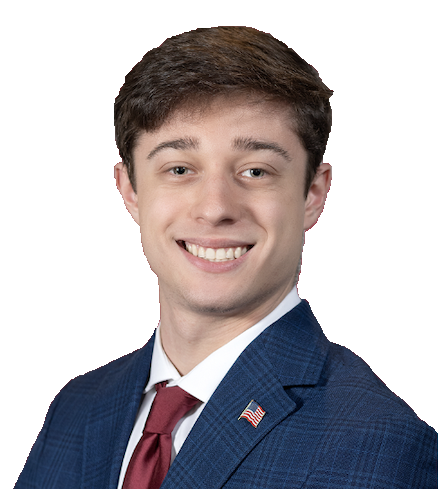

My Story
Education
I began my academic journey at the University of Maryland, where I pursued a Bachelor’s degree in Journalism with a Minor in Law and Society from August 2020 to May 2024. My time at UMD shaped my foundational skills in journalism, research, and legal studies, providing me with the analytical and storytelling abilities necessary to cover critical issues.
Building on that foundation, I chose to further my education at Northwestern University’s Medill School of Journalism, where I am currently pursuing a Master’s degree in Journalism with a specialization in Politics, Policy, and Foreign Affairs. As a Richard Schwarzlose Scholar, I am honored to receive a merit-based scholarship, recognizing my dedication to journalistic excellence.
At Northwestern Medill's news desk in Chicago.
Graduating from the University of Maryland in 2024.
Professional Experience
My professional journey began in 2022, when I worked as an intern and freelance reporter for Montgomery Community Media (MCM). Covering a wide range of topics—including education, transportation, health, and politics—I gained first-hand experience in local journalism, engaging with the pressing issues affecting communities.
In 2023, I worked as a legal intern for Kiernan Trebach, where I assisted paralegals in obtaining records for litigation in both federal and state courts across Maryland, Virginia, and Washington D.C. This experience broadened my understanding of the legal system and case litigation.
In 2024, I published a long-form investigative piece detailing the harrowing story of a journalist imprisoned in Azerbaijan – reinforcing my commitment to covering global issues and advocating for press freedom.
That same year, I worked in the Maryland General Assembly as a legislative intern in the office of Senator Brian Feldman (District 15). My responsibilities included preparing the senator for bill hearings, testifying before the House Health and Government Operations Committee, and meeting with legislators, government officials, advocacy groups, and constituents. These experiences deepened my understanding of legislative processes and policy development.
Senator Feldman's District 15 Office Team
Receiving a certification for my work towards the Maryland General Assembly's 2024 legislative session.
Personal Life
I am proud to be from the great state of Maryland and have had the privilege of traveling to various places, including Chicago, Los Angeles, Washington D.C., Austria, and Israel. These travels have enriched my perspective on global issues and cultural dynamics.
Beyond journalism and policy, I am an avid Baltimore Ravens fan, always keeping up with my favorite team. I am deeply passionate about politics, current events, and U.S. government affairs, and I enjoy analyzing policy and exploring the issues that shape our nation.
Another cause close to my heart is the fight against antisemitism, Jew-hatred, and Holocaust denial. I have visited significant historical sites, including the Western Wall, Yad Vashem Holocaust Memorial in Israel, the Shoah Wall of Names Memorial in Vienna, and the Stadttempel synagogue—the only synagogue in Vienna to survive Kristallnacht. Preserving this history is vital, as is combatting hatred and upholding Western values.
My ultimate aspiration is to work in the political field as a writer and researcher, contributing to policy solutions and advocating for the issues that matter most to me.

At the Shoah Wall of Names Memorial, which honors the 65,000 Austrian Jewish men, women and children murdered in the Holocaust.
At the Western Wall – the holiest site of the Jewish people – in Jerusalem